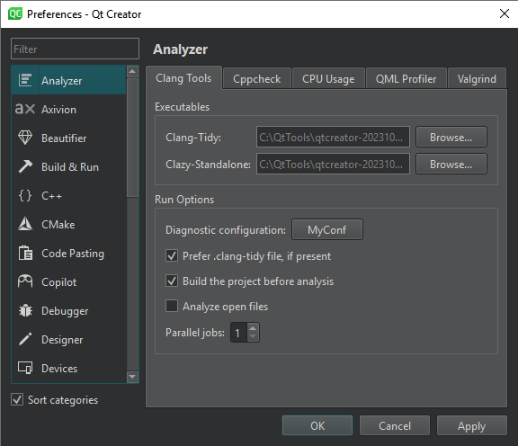
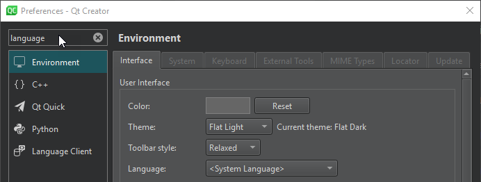
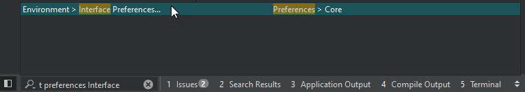

Find preferences
Qt Creator uses standard names and locations on Linux, macOS, and Windows for standard features, such as preferences.
| Linux and Windows | macOS |
|---|---|
| Edit > Preferences | Qt Creator > Preferences |
Sort preference categories
To sort the preference categories in alphabetic order, select the Sort categories check box.

Filter preferences
To find a particular preference, use the filter located at the top left of the Preferences dialog.

Go to tabs in Preferences
To go to a tab in the Preferences dialog from anywhere in Qt Creator, use the t locator filter. For example, to open the Interface tab, enter t preferences interface in the locator.

See also Navigate with locator.